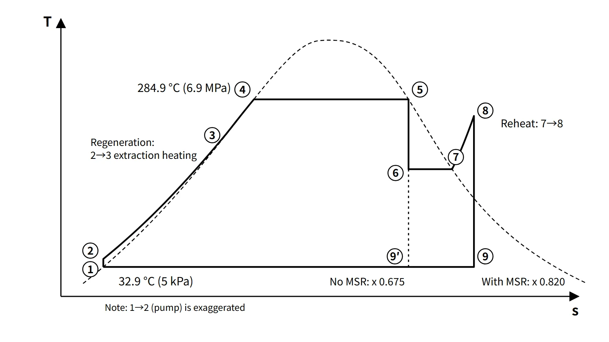
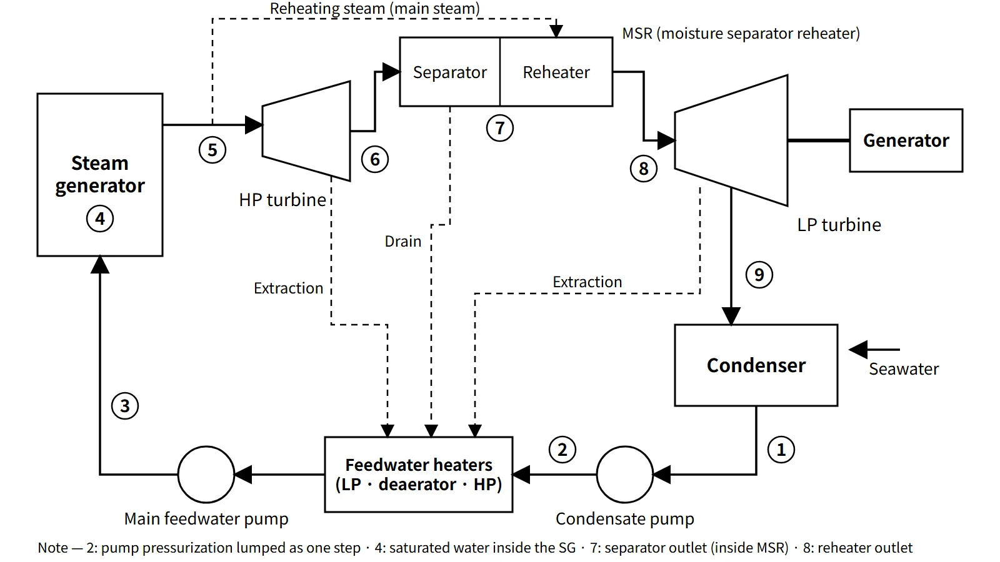

Thermal Hydraulics & Thermodynamics · C-TH-005
Rankine Cycle and Thermal Efficiency — The PWR Secondary T-s Diagram, with Reheat and Regeneration
Why a saturated-steam PWR cycle reaches about 38 % ideal and 33–35 % actual efficiency, and why regeneration raises efficiency while the MSR controls moisture.
The Rankine cycle is a steam power cycle in which water repeatedly undergoes adiabatic compression in a pump → constant-pressure heating and evaporation in the steam generator → adiabatic expansion in the turbine → constant-pressure condensation in the condenser; its thermal efficiency is η = Wnet/Qin = 1 − Qout/Qin.
The secondary side of a nuclear plant (the power conversion system) runs a regenerative-reheat Rankine cycle, adding reheat (the moisture separator reheater, MSR) and regeneration (feedwater heaters).
Principle and mechanism
The four processes and the efficiency equation
State numbers follow the original figure of the 81st exam, session 4, Q3 (① condenser outlet, ② pump outlet, ③ boiler outlet, ④ turbine outlet).
| Process | Component | Ideal process | Energy |
|---|---|---|---|
| ①→② | Feedwater pump | Isentropic compression (compressed liquid) | wp = h2 − h1 ≈ v1(PH − PL) |
| ②→③ | Steam generator | Constant-pressure heating → evaporation | qin = h3 − h2 |
| ③→④ | Turbine | Isentropic expansion (into wet steam) | wt = h3 − h4 |
| ④→① | Condenser | Constant-pressure, constant-temperature condensation | qout = h4 − h1 |
- η = [(h3 − h4) − (h2 − h1)] / (h3 − h2)
- Unlike the Carnot cycle, the steam is fully condensed before the liquid is compressed, so the pump work is less than 1 % of the turbine work. The price is a low-temperature heat-addition segment where cold feedwater is warmed.
- Efficiencies are compared most cleanly with the mean heat-addition temperature T̄H = qin/Δs. Then η = 1 − TL/T̄H, and every efficiency improvement can be explained as "raising T̄H or lowering TL".
PWR secondary numbers (IAPWS-IF97 calculation)
Example conditions: saturated steam at 6.9 MPa at the steam generator outlet (284.9 °C), condenser at 5 kPa (32.9 °C), isentropic pump and turbine.
- h3 = 2,773.9, h4 = 1,773.7 (x4 = 0.675), h1 = 137.8, h2 = 144.7 kJ/kg
- wt = 1,000.2, wp = 6.9, qin = 2,629.2 kJ/kg → η = 37.8 %
- Carnot efficiency between the same temperatures 45.2 %; mean heat-addition temperature 218.7 °C
Because of the primary coolant temperature (around 300 °C), a PWR has low steam conditions and a lower efficiency than a fossil plant (for example 24 MPa and 538 °C, ideal efficiency about 44.7 %). The bigger problem is that the turbine exhaust moisture of the basic cycle exceeds 32 %, which is why an MSR is needed.
Three ways to raise efficiency, and what is special in a nuclear plant
| Method | Principle on the T-s diagram | Application on the PWR secondary side |
|---|---|---|
| Superheating | Heat the steam above saturation → T̄H↑, exhaust quality↑ | U-tube steam generators deliver saturated steam; once-through SGs (OTSG) give slight superheat |
| Reheating | Reheat partway through expansion → exhaust quality↑; T̄H↑ if the reheat temperature is high | MSR: removes moisture from the HP turbine exhaust and reheats with main steam. The reheat temperature cannot exceed the main-steam saturation temperature, so the efficiency gain is small and the main purpose is moisture control |
| Regeneration | Preheat feedwater with turbine extraction steam → removes the low-temperature heat-addition segment → T̄H↑ | LP and HP feedwater heaters and a deaerator; 6–7 stages in large South Korean PWRs |
Comparing with a calculation model (HP extraction at 2.8 MPa, moisture separation at 1.0 MPa then reheat to 260 °C, LP extraction at 0.15 MPa, final feedwater 230.9 °C):
- Basic 37.8 % → 3-stage regeneration 42.6 % → regeneration + MSR 42.5 % (exhaust quality 0.675 → 0.820, moisture 32.5 % → 18.0 %)
- Under these conditions regeneration provides the efficiency and the MSR handles the moisture. The efficiency effect of the MSR depends on the reheat conditions and actual turbine losses, so it should not be generalized.
- With an 85 % turbine internal efficiency, regeneration + MSR gives 36.8 %; adding moisture losses, generator losses and house load, the actual net efficiency is about 33–35 % (example APR1400: 3,983 MWt → net about 1,400 MWe, about 35 %).
![Temperature–entropy diagram computed with IAPWS-IF97 showing the saturation dome with the critical point at 373.9 °C and the PWR secondary regenerative-reheat cycle through state points 1 to 9: condenser at 32.9 °C and 5 kPa, feedwater heated by extraction to 230.9 °C, evaporation at 284.9 °C and 6.9 MPa, HP expansion to x 0.828 with extraction at 2.8 MPa, moisture separation and reheat to 260 °C at 1.0 MPa, LP expansion to x 0.820 with extraction at 0.15 MPa, compared with basic expansion to x 0.675, exhaust moisture 32.5 to 18.0 percent; a moisture separator reheater photo; and efficiency bars of ideal basic 37.8, three-stage regeneration 42.6, regeneration plus MSR 42.5, 85 percent turbine efficiency 36.8, actual net about 33 to 35 percent, against Carnot 45.2 percent](../../assets/images/concepts/c-th-005-rankine-cycle/fig1-rankine-ts-pwr.webp)
State points on the T-s diagram (regenerative-reheat; 2022 and 2026 exam type)
| No. | Location / component | State | What happens |
|---|---|---|---|
| 1 | Condenser outlet | Saturated water at 5 kPa, 32.9 °C | Condensation complete |
| 1→2 | Condensate and main feedwater pumps | Compressed liquid | Pressure rise; almost coincides with 1 on T-s |
| 2→3 | LP and HP feedwater heaters, deaerator | 33 → 230.9 °C | Feedwater preheated by extraction steam (regeneration) |
| 3→4 | SG preheating region | 6.9 MPa compressed liquid → saturated liquid | Sensible heating |
| 4→5 | SG boiling region | Isothermal at 284.9 °C | Evaporation; saturated steam at the outlet |
| 5→6 | HP turbine | 1.0 MPa, x = 0.828 | Expansion; extraction at 2.8 MPa |
| 6→7 | Moisture separator | Saturated steam at 1.0 MPa | Moisture removal (drains to the feedwater system, so flow decreases) |
| 7→8 | Reheater | Superheated to 260 °C | Reheated by main steam (5) |
| 8→9 | LP turbine | 5 kPa, x = 0.820 | Expansion; LP extraction |
| 9→1 | Condenser | Constant pressure and temperature | Condensation; heat rejected to seawater |
Because extraction and moisture separation change the flow rate from segment to segment, the enclosed area of this diagram must not be read directly as net work. Likewise, 2→3 is drawn as one line, although in reality it is a series of pressure rises and mixing heaters, stage by stage.
What it means in a plant
Design — efficiency and moisture
- Secondary steam conditions are set by the primary hot-leg temperature and the steam generator heat-transfer temperature difference. The same reason explains why steam pressure falls after a power uprate.
- Because expansion takes place in the wet-steam region, moisture erosion and moisture loss in the last LP turbine stages are design variables. The Baumann rule of thumb is used: about 1 % loss of stage efficiency per 1 % moisture.
- Wet-steam and hot-water piping is vulnerable to flow-accelerated corrosion (FAC).
Operation — condenser vacuum and seawater temperature
Condenser pressure is set by the cooling seawater temperature. For a Middle East site with seawater 6–7 °C warmer (2013 exam, session 4, Q5), the ideal basic cycle (assuming the condensing temperature rises by the same amount) goes from 5 kPa (32.9 °C) to 7.4 kPa (40.0 °C), and efficiency falls from 37.8 to 36.8 %, about 1 percentage point. If the primary capacity and the main steam and feedwater piping are fixed, the electrical output falls. Compensating requires a larger condenser heat-transfer area and circulating-water flow, and LP turbine last stages suited to the higher back pressure.
Worked example (2008 exam, session 3, Q5)
The units of the original were restored from the HWP equation objects (flow in kg/sec, specific heat in kJ/kg℃, part (b) in MWt).
- Qin = 18,640 × 6.1 × (315 − 295) = 2,274,080 kW ≈ 2,274 MWt (total heat available to the secondary side)
- Qout = 28,230 × 4.3 × (31 − 17) = 1,699,446 kW ≈ 1,699 MW
- η = 1 − 1,699.4/2,274.1 = 25.3 % (net work about 575 MW)
The 2022 exam, session 3, Q5 has the same structure (Qin = 16,491 × 5.862 × 31 ≈ 2,997 MWt). However, reading the exhaust enthalpy as h = hf + x(hg − hf) gives η ≈ 40.5 %, while reading 2,093.84 as the latent heat of evaporation gives η ≈ 33.7 %; the answer depends on the interpretation, so state it first in the answer.
Regulatory basis
The thermodynamic cycle itself is not a safety-regulation item; it connects to the review criteria for secondary-side equipment.
| Basis | Key point |
|---|---|
| NUREG-0800 SRP Chapter 10, "Steam and Power Conversion System" | Review of 10.2 turbine generator, 10.3 main steam, 10.4.1 main condenser, 10.4.7 condensate and feedwater systems |
| KINS Safety Review Guidelines for Light-Water Reactors, Chapter 10 | Follows the SRP Chapter 10 structure |
| 10 CFR 50 App. A, GDC 4 | Protection against dynamic effects such as turbine missiles |
| NRC GL 89-08 (1989) | Management of secondary piping wall thinning (FAC) — prompted by the Surry Unit 2 (1986) feedwater pipe rupture |
| IAPWS-IF97 | Industrial standard for steam properties (1997, replacing IFC-67) |
| ASME PTC 6 | Steam turbine performance testing |
Compared with when the questions were set (2006–2026), the principles have not changed. Differences between older textbook steam tables (based on IFC-67) and IF97 values are too small to affect the results.
Easily confused pairs
| Rankine | Carnot | Reheat | Regeneration | |
|---|---|---|---|---|
| Essence | Liquid compression; practical cycle | Isothermal heat addition and rejection; theoretical upper limit | Reheating partway through expansion | Feedwater preheating by extraction |
| Efficiency basis | T̄H < TH | TH itself | T̄H↑ (with high-temperature reheat) | Removes low-temperature heat addition |
| Meaning for a PWR | Basic 37.8 % | 45.2 % | Moisture control (MSR) | Main means of raising efficiency |
Also distinguish thermal efficiency from heat rate: HR = 3,600/η kJ/kWh, so η = 35 % gives about 10,286 kJ/kWh.
Key points at a glance
- Definition: steam power cycle of pump compression → constant-pressure heating in the SG → isentropic expansion in the turbine → constant-pressure condensation in the condenser.
- Efficiency: η = (wt − wp)/qin = 1 − qout/qin, with wp ≈ v(PH − PL).
- Mean heat-addition temperature: η = 1 − TL/T̄H; improvements raise T̄H or lower TL.
- PWR example: 6.9 MPa saturated steam, 5 kPa → ideal 37.8 %, Carnot 45.2 %, actual net about 33–35 %.
- Superheat: T̄H↑; PWR U-tube SGs deliver saturated steam.
- Reheat (MSR): exhaust quality 0.675 → 0.820; main purpose is reducing moisture erosion and loss.
- Regeneration: feedwater preheating by extraction; ideal 37.8 → 42.6 %; 6–7 stages.
- Condenser: warmer seawater → higher back pressure → lower efficiency (about 1 percentage point from 5 to 7.4 kPa).


This is a model answer, not an official solution. It reflects the criteria current as of 2026.
Exam relevance
The Rankine cycle has appeared eight times in the Korean Professional Engineer (Nuclear Power) exam, from the 78th and 81st exams of the old series through the 2026 exam: 78th exam, session 4, Q2 (secondary Rankine cycle and condenser heat); 81st exam, session 4, Q3 (basic Rankine T-s diagram and its four processes); 2008 exam, session 3, Q5 (secondary thermal efficiency calculation); 2013 exam, session 4, Q5 (BOP design changes for a high-seawater-temperature site); 2016 exam, session 2, Q3 (superheat, reheat and regeneration for higher efficiency); 2022 exam, session 3, Q5 (secondary thermal efficiency calculation) and Q6 (marking states 1–13 on a regenerative-reheat T-s diagram); and 2026 exam, session 3, Q3 (regenerative-reheat Rankine T-S diagram and components). Typical items are drawing the T-s diagram with numbered states matched to components, efficiency calculations from heat balances, and explaining why reheat and regeneration are used in a saturated-steam PWR cycle. In the 78th exam question the symbol for "thermal efficiency η" was missing from the transcription and was restored from the original. Condenser heat is QL = Pout(1/η − 1) = ṁ(h4 − h1), and the properties needed are hg and sg at PH and hf, hfg, sf, sfg and vf at PL.